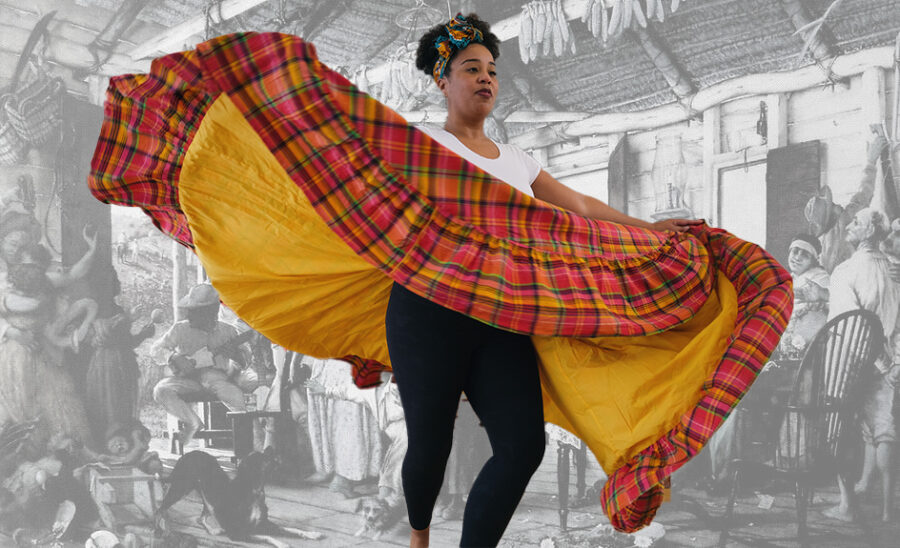

Bomba Performance at DePaul School of Music
In conjunction with the exhibition Tengo Lincoln Park en mi Corazón: Young Lords in Chicago, DPAM invites you to an afternoon of Bomba, the oldest Afro-Puerto Rican musical form, rooted in resistance and collective expression. Artist and educator Arif Smith, Program Manager at the Old Town School of Folk Music and Research Associate at the Field Museum, will lead a conversation and performance with ensemble group Los Medicos exploring music’s role in activism and memory. The event features archival songs from the Young Lords Organization performed through Bomba for the first time, activating the form’s power as a tool for political imagination. Smith is also featured in the exhibition with a commissioned video installation created in collaboration with artist Rebel Betty.
This program is supported by DePaul University’s Vincentian Endowment Fund through the Division of Mission and Ministry, The Center for Latino Research, The Center for Black Diaspora, The DePaul School of Music, the Office of Institutional Diversity and Equity, and Office of the President.
Image credits: (foreground) photograph by Tafari Melisizwe; (background) Francisco Oller, El Velorio, 1893.